O início da década de quarenta foi difícil para os homens do mar. Navegar pelos mares do globo se tornara muito perigoso. Como se não bastassem as dificuldades corriqueiras da vida marítima, havia então a guerra e os submarinos. Navios mercantes circulavam pelo globo transportando as mais diversas cargas. Seus tripulantes se despediam das famílias com a incerteza de uma jornada duvidosa. O perigo estava na guerra e nos submarinos alemães que agiam como corsários, torpedeando e afundando navios mercantes que muitas vezes transportavam civis inocentes. O medo estava no imaginário popular.
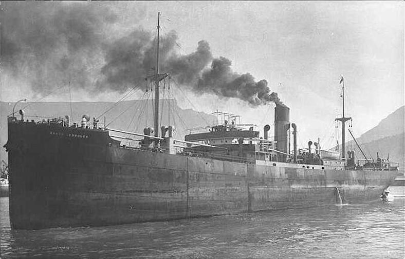
O capitão de marinha mercante, Donald MacCullam, filho de Duncan e Catherine MacCullam, nasceu em Glasgow, Escócia em 1900, mas viveu sua infância e juventude na pequena e rochosa ilha de Tiree, a oeste de sua cidade natal. MacCullam era um homem de princípios: casou-se em novembro 1934 com sua primeira e única namorada. O casamento fora adiado até que ele pudesse comandar o seu próprio navio, o Baron Dechmont. Sua esposa Christina teve que esperar um mês até que o navio do seu futuro marido retornasse de uma viagem para que pudessem realizar a cerimônia. Sua primeira e única filha veio ao mundo nove meses após o seu casamento.
O Steamer Ship ou "navio a vapor" Baron Dechmont foi fabricado em 1929 pelo estaleiro Ardrossan Drydock & Shipbuilding Co, na Inglaterra e tinha, portanto, 14 anos de serviço. Seus motores triple expansion foram fabricados por J. G. Kincaid & Co Ltd. Era um navio grande e robusto do tipo three islands – três ilhas, localizadas na proa, meia-nau e popa. O Baron Dechmont também era um DEMS Gunner, sigla em inglês para “Navio Mercante Equipado com Armamento para Defesa”, e estava equipado com uma arma de grosso calibre localizada na popa da embarcação, mas que não chegou a ser usada quando deveria...
Em meados de novembro de 1942 MacCullam supervisionava o carregamento do seu navio para cruzar o Atlântico. Sua carga era carvão mineral e coque – este último é um tipo de combustível derivado do carvão – ambos extremamente importantes para o esforço de guerra. Seu porto de destino era Recife, Pernambuco, na América do Sul. A viagem seria dividida em dois trechos: no primeiro, de Liverpool até Nova Iorque onde SS Baron Dechmont navegaria sob escolta do comboio de prefixo “ON-150”. Em seguida navegaria até Pernambuco.
O navio partiu carregado no dia 1º de dezembro de 1942 de Barry and Milford Haven, Inglaterra e chegou à Nova Iorque no dia do Natal. Sua tripulação era composta por 44 homens sendo eles o Capitão Donald MacCullam, oito homens responsáveis por operar o canhão de popa, e 35 oficiais e marinheiros.
Por incrível que pareça durante a viagem os submarinos foram um receio secundário, pois uma forte tempestade atingiu o comboio. Sua estada em Nova Iorque deve ter sido curta, pois apenas nove dias depois de aportar o cargueiro já se encontrava ao largo do Ceará, sem escolta e sendo seguido de perto Undersee boat 507.
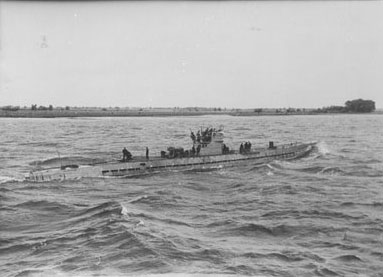
O Undersee boat 507, ou simplesmente U-507, foi um submarino importante para a história do Brasil e um dos responsáveis por seu ingresso na II Guerra Mundial ao lado dos Aliados. O U-507 pertenceu à classe de u-boot Tipo IXC, tendo sido produzidas 54 unidades entre março de 1939 e julho de 1941, em três estaleiros diferentes: o AG Weser e o Deustche Schiff und Maschinenbau AG, ambos em Bremen, e Deustche Werft AG, de Hamburgo. Possuía comprimento total de 76,76m, boca de 6,76 m e altura total de 9,6 metros. O casulo interno que ficava sob pressão quando o u-boot submergia – media 57,75 m de comprimento por 4,4 m de altura e nesse espaço ficavam alojados entre 48 e 54 tripulantes, sendo 4 oficiais graduados. Em agosto de 1942 este submarino veio para a América do Sul em sua terceira patrulha com a missão de fazer “manobras livres” contra navios brasileiros. Como resultado, cinco navios brasileiros foram afundados em menos de três dias, num total de sete navios em seis dias (os brasileiros: Annibal Benévolo, Baependy, Araraquara, Arará, Itagiba, Jacyra, e o sueco Hammaren).
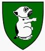
Imagem:Nos rastros das história
Seu comandante o Capitão de Corveta Harro Schacht, era um excelente estrategista. Começou sua carreira em 1926 comandando cruzadores de pequeno porte. Apenas em 1937 entrou para a marinha militar alemã, comandando seu primeiro submarino em outubro de 1941. Devemos ter em mente que os submarinistas eram a nata das forças armadas alemãs e hoje poderiam ser comparados a astronautas em uma guerra inter-estelar devido ao fascínio que representava a vida sob a superfície do mar.
Harro Schacht esteve envolvido no controverso incidente com o navio SS Lacônia em setembro de 1942 após as manobras na costa brasileira. Carregado com civis e 1.800 prisioneiros de guerra italianos, o Lacônia foi torpedeado por engano pelo U-156. O submarino italiano Cappelini e os alemães U-156, U-506, U-507 resgataram não apenas seus aliados italianos como também soldados e civis britânicos e poloneses.
No dia 3 de janeiro de 1943, às 18h logo após o pôr do sol, um zumbido estranho seguido de uma forte explosão deve ter ressoado nos ouvidos de alguns tripulantes do SS Baron Dechmont. O ataque pegou todos de surpresa, o canhão de popa nem chegou a ser armado. Já estavam tão próximos da costa que podiam ver o contorno do litoral. Sete vidas se perderam no ataque: algumas na explosão e outras pela a agonia do afogamento. Muitos ficaram feridos. Logo após o ataque o submarino que observava à distância aproximou-se dos náufragos. Um dos tripulantes alemães perguntou em inglês quem era o ship master e após se apresentar MacCullam foi interrogado. Provavelmente ainda em seu bote salva-vidas negou-se a revelar sua carga e porto de destino e foi levado prisioneiro para dentro do submarino. Na manhã seguinte 36 náufragos (28 tripulantes e 8 artilheiros) chegaram à praia do Pecém com vida e foram recebidos pela população local e encaminhados às autoridades.
Roy Bartholomew foi um dos sobreviventes da Marinha Real DEMS do BARON DECHMONT que sobreviveu nos botes salva-vidas. Ele comentou com seu filho Bartolomeu Mark que o dia tinha sido quente e ensolarado e o navio foi atingido por 2 torpedos, um na frente e outro no meio do navio. Muitos ferimentos foram causados pelo carvão e coque sendo espalhados com grande força. Os botes salva-vidas estavam furados e precisavam ser tapados com trapos ao entrarem na água. O U-507 emergiu logo após o naufrágio e tirou o Capitão Donald MacCallum , mas deu suprimentos de água para a tripulação nos botes salva-vidas. A tripulação viajou para o norte para Miami e depois para Boston em uma Dakota da USAF. Roy Bartholomew continuou a 2ª Guerra Mundial como atirador em navios mercantes em comboios árticos para Murmansk. Roy morreu em 1992 aos 69 anos.
Três dias após este ataque - 06 de janeiro de 1943 - outro submarino alemão, o U-164 era afundado por cargas de profundidade no litoral norte do Ceará e se tornava o primeiro a ser afundado no litoral brasileiro.
O U-507 seguiu seu caminho rumo leste onde cinco dias depois do último ataque encontrou sua última vítima, o também britânico SS Yookwood afundado ao largo do Rio Grande do Norte. Seu capitão também foi levado prisioneiro, chegando a quatro o número de britânicos a bordo do U-507. Ser prisioneiro a bordo de um submarino alemão durante a segunda guerra mundial era uma experiência assustadora e extremamente desconfortável. Depois disso o submarino rumou para noroeste. Provavelmente passou ao largo de Fortaleza por volta do dia 10 ou 11 de janeiro.
Foi no dia 13 de janeiro que o U-507 encerrou sua quarta patrulha após 47 dias no mar. O Tenente Aviador Lloyd Ludwig e sua tripulação decolaram no dia 2 de janeiro para dar cobertura aérea a comboios aliados entre Natal e Belém durante dez dias. Logo após a primeira decolagem, avistaram três botes salva-vidas repletos de sobreviventes, provavelmente do Oakbank. Após dez dias voando entre as bases de Belém, Fortaleza e Natal receberam a informação de que um submarino estava seguindo um comboio no litoral norte do Ceará.
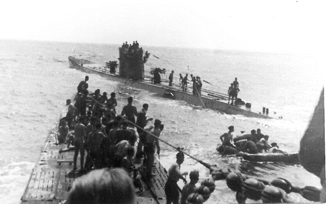
Referência da foto:Submarino U-507 - US National Archives.
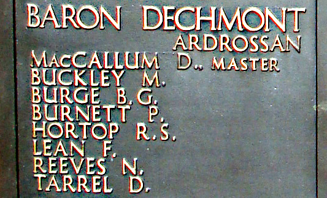
O U-507 estava à espreita de mais uma vítima. Dia 13 de janeiro de 1943 os aviadores norte-americanos do avião tipo Catalina prefixo PBY-10 do Esquadrão VP-83 decolaram de Fortaleza em busca do submarino que fora avistado no litoral norte cearense.
Após dez dias voando naquela região a bordo do Catalina, prefixo PBY-10, a patrulha aérea recebeu a informação, na manhã do dia 13 de janeiro, de que um submarino estava seguindo um comboio, mais precisamente a noroeste da Base Aérea de Natal, precisamente no litoral do Piauí (a cerca de 100 milhas marítimas de Parnaíba). Voando contra o sol a cerca de 6 000 pés (aproximadamente 2 000 m) de altitude e usando a cobertura das nuvens, o Catalina avistou o U-507. Em um voo rasante, o avião despejou quatro cargas de profundidade. Após o ataque não foram avistados sobreviventes da tripulação de 54 homens ou destroços e os aviadores só ganharam crédito por ter causado poucos danos ao inimigo. Só após a guerra foi confirmado o afundamento do submarino naquele ataque. As coordenadas do naufrágio do submarino alemão U-507 são aproximadamente 1º38’S e 39º52’W.
Junto com a máquina alemã pereceram os quatro prisioneiros ingleses.
Algumas dezenas de anos depois estas histórias distantes nem parecem realidade. Muito menos parecem ter acontecido aqui, em nossa terra. As marcas são poucas, alguns livros, algumas memórias, mas as provas estão no fundo do mar. Milhares de toneladas de metal retorcido jazem nas profundezas do Atlântico Sul. Algumas em profundidades inatingíveis... outras estão debaixo dos nosso olhos.
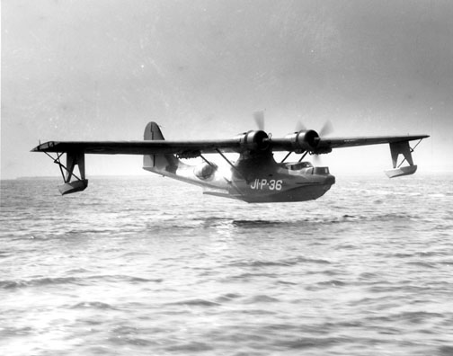
Referência da foto:Consolidated PBY Catalina do tipo que afundou o U-507.
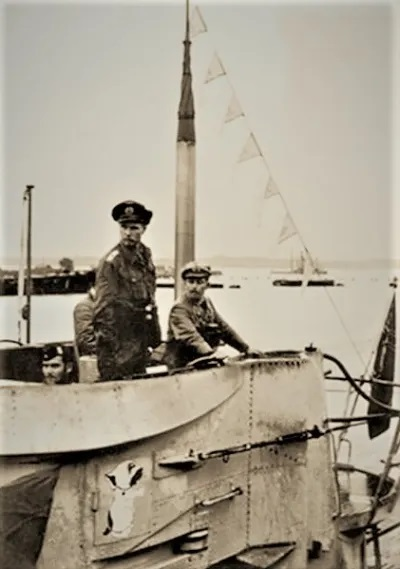
Referência da foto:Tokdehistória - Oficiais na torre do U-507.
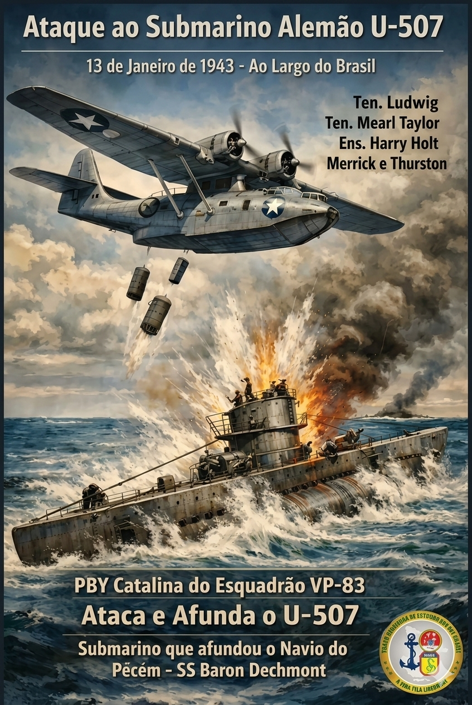
Imagem:Grupo Sergipano de estudos da FEB (Cartaz realçado com AI).
| Sobrenome | Nome Próprio | Idade | Data Falecimento | Classificação | Cemitério / Memorial | Grave Ref |
|---|---|---|---|---|---|---|
| Buckley | Michael | 26 | 03/01/1943 | Donkeyman | Tower Hill Memorial | Painel 14. |
| Burge | Bertie George | 22 | 03/01/1943 | Bombeiro e Trimmer | Tower Hill Memorial | Painel 14. |
| Burnett | Percival | 25 | 03/01/1943 | Lubrificador | Tower Hill Memorial | Painel 14. |
| Hortop | Robert Samuel | 35 | 03/01/1943 | Carpinteiro | Tower Hill Memorial | Painel 14. |
| Lean | Frederick | 59 | 03/01/1943 | Bombeiro e Trimmer | Tower Hill Memorial | Painel 14. |
| MacCallum | Donald | 40 | 03/01/1943 | Mestre | Tower Hill Memorial | Painel 14. |
| Reeves | Norman | 21 | 03/01/1943 | Bombeiro e Trimmer | Tower Hill Memorial | Painel 14. |
| Tarrel | Donald | 50 | 03/01/1943 | Contramestre | Tower Hill Memorial | Painel 14. |
1. BARTHOLOMEW, ROY (69), Gunner, Baron Dechmont SS, † 1992, Sobreviveu ao naufrágio e continuou a 2ª Guerra Mundial como atirador em navios mercantes em comboios árticos para Murmansk.
2. BUCKLEY, MICHAEL (26), Donkeyman, SS Baron Dechmont, Marinha Mercante, ° 1917 ~ † 03/01/1943, SS Baron Dechmont (Ardrossan). Marinha Mercante. [Família] Filho de James e Julia Buckley, de Kinsale, Co. Cork, República da Irlanda. Marido de Eileen Buckley, de Barry, Glamorgan, Memorial: Tower Hill Memorial.
3. BURGE, BERTIE GEORGE (22), Fireman & Trimmer, SS Baron Dechmont, Marinha Mercante, ° 1921 ~ † 03/01/1943, SS Baron Dechmont (Ardrossan). Marinha Mercante, Memorial: Memorial Tower Hill.
4 . BURNETT, PERCIVAL (25), Greaser, SS Baron Dechmont, Marinha Mercante, ° 1918 ~ † 03/01/1943, SS Baron Dechmont (Ardrossan). Marinha Mercante, Memorial: Memorial Tower Hill.
5. CHESTNUT, JOHN (30), Oficial Chefe, SS Baron Dechmont, Marinha Mercante, °1912 ~ † 1985.
6. HORTOP, ROBERT SAMUEL (35), Carpinteiro, SS Baron Dechmont, Marinha Mercante, ° 1908 ~ † 03/01/1943, SS Baron Dechmont (Ardrossan). Marinha Mercante. [Família] Filho de John Richard e Alice Hortop, de Barry, Glamorgan. Marido de Elizabeth Hortop, de Barry, Memorial: Tower Hill Memorial.
7. LEAN, FREDERICK (59), Fireman & Trimmer, SS Baron Dechmont, Marinha Mercante, ° 1884 ~ † 03/01/1943, SS Baron Dechmont (Ardrossan). Marinha Mercante, Memorial: Memorial Tower Hill.
8. MACCALLUM, DONALD (40), Mestre, SS Baron Dechmont, Marinha Mercante, ° 1903 ~ † 13/01/1943 , SS Baron Dechmont (Ardrossan). Marinha Mercante. [Família] Filho de Duncan e Catherine MacCallum. Marido de Christina MacCallum, de Glasgow. [Fate] MacCallum foi levado prisioneiro de guerra a bordo do U-507 e morreu quando o U-507 foi afundado em 13 de janeiro de 1943. Veja também a lista do U-507 , Memorial: Tower Hill Memorial.
9. REEVES, NORMAN (21), Fireman & Trimmer, SS Baron Dechmont, Marinha Mercante, ° 1922 ~ † 03/01/1943, SS Baron Dechmont (Ardrossan). Marinha Mercante. [Família] Filho de George Worthy Reeves e Lilian Maud Reeves, de Barry Island, Glamorgan, Memorial: Tower Hill Memorial.
10. STEPHENSON, WALTER FARQUHARSON (19), Aprendiz (Supernumerário), SS Cidade de Pretória, Marinha Mercante, ° 1924 ~ † 04/03/1943 , Marinha Mercante. [Família] Filho de Walter Farquharson Stephenson e Margaret Paterson Young Stephenson, de Wormit, Fife. Sobreviveu ao naufrágio do Barão Dechmont , mas morreu mais tarde, quando a cidade de Pretória foi afundada.
11. TARREL, DONALD (50), Contramestre, SS Baron Dechmont, Marinha Mercante, ° 1893 ~ † 03/01/1943, SS Baron Dechmont (Ardrossan). Marinha Mercante. [Família] Filho de John e Isabella Tarrel. Marido de May Florence A. Tarrel, de South Chingford, Essex, Memorial: Tower Hill Memorial.
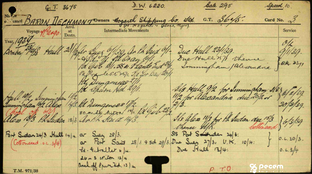
Referência da foto:Ficha (página inicial) do livro de registros do navio Baron Dechmont
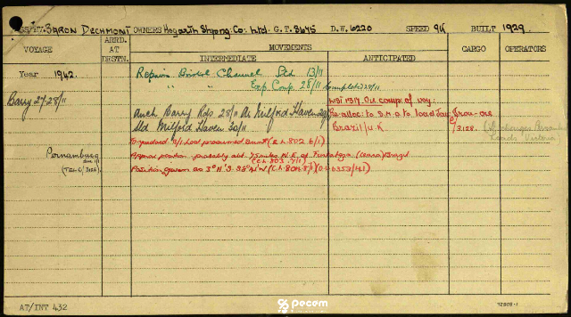
Referência da foto:Última página com registros do livro de bordo do navio Baron Dechmont; antes do seu naufrágio.
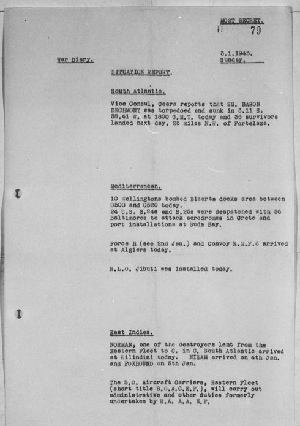
Referência da foto: US National Archives -ADMIRALTY WAR DIARIES - Admiralty War Diaries 1-1-43 to 1-31-43.
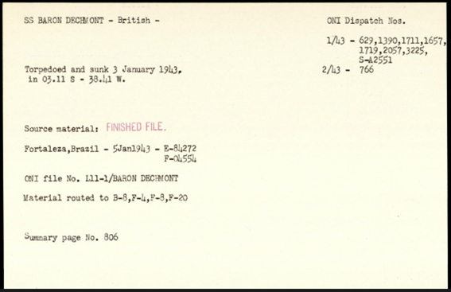
Referência da foto: US National Archives - ficha baron dechermont A. K. Fernstrom - Swiss THRU SS Ezra Weston.